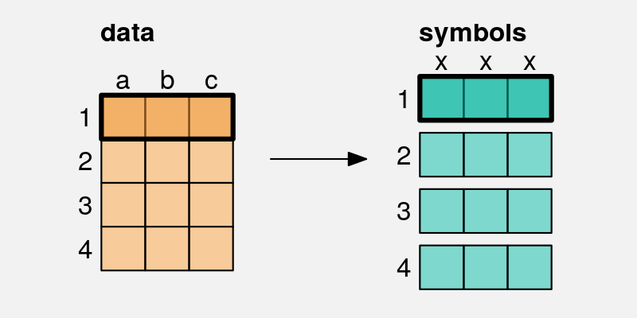

11 Multiple Mappings
Figure 11.1 shows a data visualisation of the performance measures for teams in the 2023 Rugby World Cup (Table 9.1). This visualisation is different from anything we have seen previously because it involves multiple mappings. The data symbol in this case is a simple data point, but we have mapped data values to five different visual features of each data point. The number of clean breaks is encoded as the horizontal position of the data points and the number of tries is encoded as the vertical position of the data points. The number of points scored is encoded as the size of the points, the hemisphere is encoded as the shape of the points, and the number of runs is encoded as the colour of the points.
Figure 11.1 is effective in some ways because some of the mappings involve effective visual features. For example, we can easily decode the number of clean breaks and the number of tries from horizontal and vertical positions. We can also decode a correlation between clean breaks and tries from the emergent feature of position in space (Section 9.2).
However, other mappings are less effective. For example, it is less easy to accurately decode number of points scored from size and even harder to decode the number of runs from colour. In addition, we are hampered by the fact that many different visual features are changing at once, so it is harder to perceive individual differences (see Section 2.5).
One goal of visualising multiple variables like we have in Figure 11.1 is to discover or display multivariate relationships between the variables. For example, we can see that there are four teams in the top-right corner of the plot that are all relatively large and relatively dark in colour, which suggests that there is a group of teams that run more, make more clean breaks, score more tries, and score more points compared to the other teams.
This section looks at some of the different approaches to visualising several variables at once. How do we perceive multivariate relationships? And can we still perceive individual data values at the same time?
11.1 Parallel coordinates plots
One issue with Figure 11.1 is that it attempts to map each data variable to a separate visual feature. Once we have used both horizontal and vertical position, we have to start using less accurate and less appropriate visual features, like area and colour for quantitative data values (see Chapter 3). If we attempted to map all of the variables in Table 9.1, we could actually run out of visual features to use (Figure 3.5).
An alternative approach is to map more of the data variables to the same visual feature. For example, Figure 11.2 shows a parallel coordinates plot of the data from Figure 11.1. In this visualisation, all of the quantitative variables have been encoded as position, with just hemisphere (qualitative) encoded as colour.

A parallel coordinates plot maps data summaries rather than raw data values (Chapter 8). For example, all data values are standardised to a range between 0 and 1.1 Table 11.1 shows some of the values that are actually mapped to visual features in Figure 11.2. Each variable is encoded as a different horizontal position and the values within each variable are encoded as vertical position. In this way, all quantitative data values are encoded as position.
| country | sphere | variable | value |
|---|---|---|---|
| Namibia | South | runs | 0.16 |
| Romania | North | runs | 0.00 |
| Chile | South | runs | 0.30 |
| Samoa | South | runs | 0.31 |
| Australia | South | runs | 0.42 |
| Georgia | North | runs | 0.47 |
In addition, the hemisphere is encoded as colour and a separate line data symbol is drawn for each country. This means that a visual shape is drawn for each country (Figure 11.3; Chapter 10).

On one hand, a parallel coordinates plot appears to makes sense because it encodes multiple data values to position, which is an accurate visual feature for quantitative data. However, this advantage is immediately squandered because the values that are encoded are not the raw data values (Figure 8.2), so a parallel coordinates plot is not effective for decoding raw data values from the positions of the lines. Furthermore, the data symbols are lines, so each data symbol encodes multiple data values (Section 10.1), which makes it difficult to decode even individual data summary values from the lines.
The effectiveness of a parallel coordinates plot comes from the visual shapes produced by the lines. For example, in Figure 11.2, we are able to identify a group of four lines at the top of the plot that are separate from the other lines. This grouping across at least three variables (clean breaks, tries, and points) is easier to see compared to Figure 11.1. We can also more clearly see that there are two teams that have similar numbers of runs to the top four, but then are mixed in with the other teams on the other variables. Furthermore, the fact that many of the lines are reasonably horizontal rather than criss-crossing each other wildly suggests that there is an overall correlation between all four quantitative variables, not just in the top four teams.
A parallel coordinates plot can be effective at identifying high-dimensional groups or correlations because it maps multiple data values from different variables to a single visual shape.
11.2 Case study: Bubble plots
An example of using area/size for third variable.
Provide some better options.
11.3 Small multiples2
One difficulty with Figure 11.2 is that many of the lines overlap each other, which makes it difficult to separately perceive individual visual shapes. Figure 11.4 shows an alternative approach to visualising the same data, called a profile plot. Similar to a parallel coordinates plot, a visual shape is drawn for each country, but the shape in this case is a filled in polygon, effectively the lines in Figure 11.2 with the area below them (down to zero) filled in.
Again, this sort of data visualisation can be effective because of the overall shapes. For example, we can see a group of four shapes that are larger than the others. We can also see that Argentina and Fiji appear very similar, which was not apparent in previous plots.

Figure 11.4 uses the same data summaries as Figure 11.2 (Table 11.1), and similar mappings: each variable is encoded as a different horizontal position and the values within each variable are encoded as vertical position and hemisphere is mapped to colour. The data symbol is also similar: multiple data values are mapped to a single data symbol, in this case a polygon.
The difference in Figure 11.4 is that, rather than having all of the data symbols on the same plot, each data symbol is drawn in its own position in space. This makes it easy to view each distinct data symbol.
The cluster of four larger shapes in Figure 11.4 is also easier to see because the countries have been ordered by the number of points scored (the right-hand height of the shape). As we have seen before, ordering data symbols can make a big difference (Section 5.1).
11.4 Facetting3
Figure 11.5 shows a line plot of the number of youth offenders per year in different Police Districts of New Zealand. This visualisation makes use of several effective mappings. For example, we encode year as horizontal position and we encode count as vertical position. However, there is also a weaker mapping: the Police District. We encode districts as colour, but because there are 12 different districts, we are exceeding the capacity of colour (Section 3.6). It is not easy to differentiate all of the different colours (not helped by overplotting of the lines).
A better mapping for Police District would be position, which has a much higher capacity, but position has already been taken by year and count.

Figure 11.6 shows one solution: a facetted plot. Each district has been encoded as a position in space and we draw a separate plot for each district. This makes it very easy to distinguish the individual districts.
One downside is that comparisons between districts are more difficult because counts and/or years are unaligned (Section 4.2). In this case, we have mitigated that problem by drawing a grey line for all districts in each plot. Similar to grid lines, this makes it easier to compare the line for each district to other districts (Section 5.4).

We have again ordered the panels so that districts are near to other districts with a similar starting count of offenders (Section 5.1).
11.5 Case study: Scatterplot matrices
Figure 11.7 shows a scatter plot matrix of the performance measures for teams in the 2023 Rugby World Cup (Table 9.1).
This is another example of reusing position to encode data values. Each combination of variables is encoded as a separate scatter plot at a different position in space and, within each scatter plot, two variables are encoded as horizontal and vertical position.
Within each scatter plot, there is an emergent feature of position in space, which allows us to decode the correlation between different pairs of variables. Although this only allows us to see pairwise correlations between variables, we can also get a glimpse of higher-level correlations across several of the scatterplots.
For example, looking down the diagonal of the matrix, we can see that: the number of runs is correlated loosely with the number of clean breaks; the number of clean breaks is more strongly correlated with the number of tries; and the number of tries is very strongly correlated with the number of points.
If we look down the first column of the matrix, we can see that: the number of runs is correlated loosely with the number of clean breaks, a little more loosely with the number of tries and a little more loosely still with the number of points.

11.6 Non-cartesian mappings
Parallel plots is actually an example of this, so can just refer back to Section 11.1
Refer back to Section 4.4
11.7 Case study: kiviat plots or radar plots or spider plots
(David Peebles (2008))
11.8 Case study: Barycentric plots (ternary plots)
11.9 Dangers of multiple mappings
Figure 11.1 showed that the naive approach of just using a separate visual feature for each data variable leads to complex data visualisations that are difficult to decode. Although there are better options, like small multiple and facetting, there is still a limit to how much information can effectively be displayed at once within a static data visualisation.
This is one area where dynamic and interactive graphics can be useful because the viewer is able to rapidly switch between multiple views of the data, which means that each individual view can be simpler.4
11.10 Summary
When we need to visualise multiple variables at once, it is not effective to map each different variable to a different visual feature.
An alternative is to reuse the same visual feature for multiple different variables. In particular, small multiples, or facetting, allows us to use position for more than just two variables.